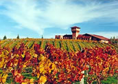

Blenheim
Blenheim (with a population of over 30,000 people) is the largest town in the region of Marlborough. Dubbed the sunshine capital of New Zealand, Blenheim's warm/dry climate has helped it become the country's largest grape growing and wine making region.
Most of the wineries offer you the chance to taste their wines and many have a cafe or restaurant on site. Sauvignon Blanc is the region’s speciality, but wines made with Chardonnay, Riesling, Pinot Noir, Pinot Gris and Cabernet Sauvignon grapes are also highly acclaimed. Wine trail maps make it easy to find your way around the vineyards.
Every year, the Marlborough Wine Festival attracts thousands of people from all over New Zealand to savour the stunning wine produced in the Marlborough region. The festival offers something for everyone including wine tasting, wine tutorials, great food, an Arts/Crafts market day and live music. Blenheim is also located less than an hour from Picton and the beautiful Marlborough Sounds.